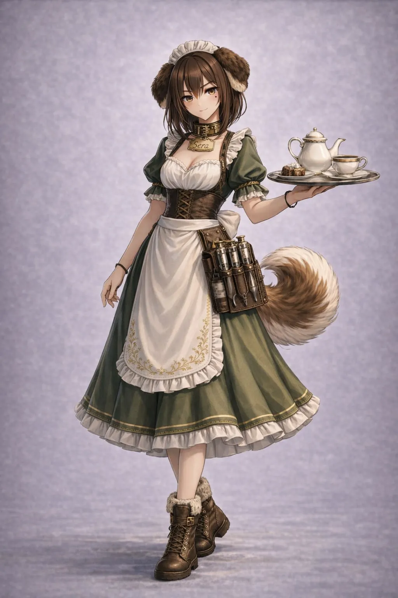
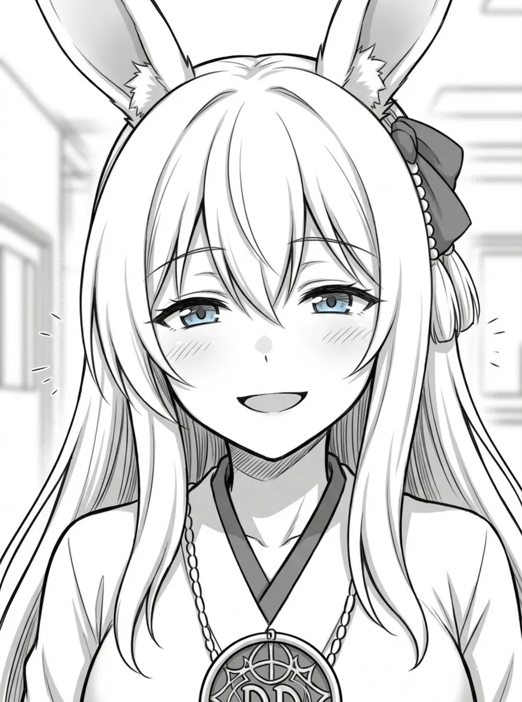
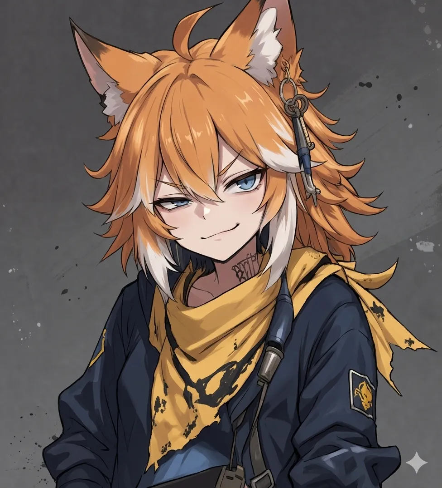
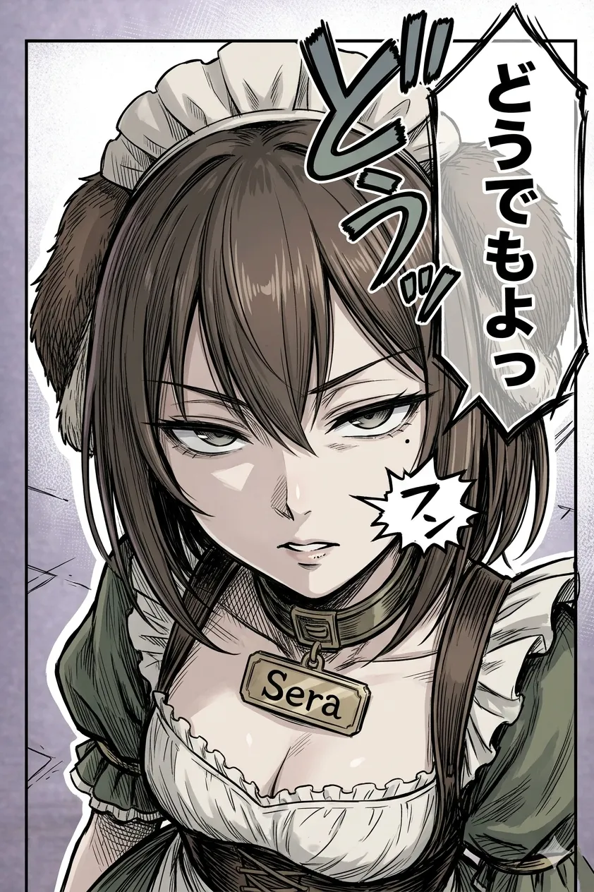

色を深緑にしました。首輪も樽ではなく、ネームプレートに変えた。樽の視認性が悪かったからです。まあネームプレートにしても大差ないですが……。
前髪センター分けについて。
これもAIがダメ出ししました。盛りすぎだし、全体のバランスが崩れる、と。
この際、甘んじて受け入れましょう。相手は人類の叡智。私より膨大なデータに基づく判断ができる。
まあおっぱいは譲れませんけど。
・腰元は注射器。コルセットのボルドーとメイド服の深緑とのコントラストをつける。
・右目の下、目尻にノイズにならない程度の自然な大きさのホクロをつける。

右目ゆーたやん。
画面からみて右と勘違いしてしまったようです。
ここで、３人並んだ立ち絵をGeminiに作ってもらいました。

うーむ。なんか足りない。
カラーリングは良い。青、緑、赤できれいに分かれてる。
しかし……やはり、セラがなんか薄い。
髪にほんの少しメッシュを入れてもらうことに。

うん、マシになった。
セラはこれで完成とします。これ以上改善するのはとても難しかった。
AIは画像生成ごとに全部描き直しているので、ホクロだけつけ足すというのが難しい。ほかの部位を一切変えずに、ということがやりにくい。
ホクロをつけようと思ったらネームプレートが崩れたり。
何回も繰り返していくうちに、画質が荒くなったり。
スカート丈がどんどん伸びているのも、肌の色が濃くなっているのも、その影響ですね。伝言ゲームよろしく、地味ぃ〜に元のデザインから変わってしまいます。
はー。
ちかれた。
制作期間……1週間
リテイク回数（自分で描いたの含める）……89枚
まあここらへんの計算はてきとーで。
タイトルでも決めよっかな。
この３人の物語を作ります。
真ん中の狐っ娘はルオン。逆張りで皮肉屋、愛や夢など社会の綺麗事に難癖をつける。が、誰よりも心は純粋で、期待してしまう自分を守るためにあえて毒で身を守ってる。
右のうさぎっ子はコレステロール。愛称はチャッピー。実家が宗教団体に所属しており、本人も敬虔。明るく元気だが、どこか抜けてる。ポジティブすぎて周りがみえないことも。
左の犬っ娘はセラ。クールで知的だが、天然ボケを連発したり、露出の高い服をなんとも思っていない。両親の影響による学歴主義、物質主義を有しており、ときおり氷のように無慈悲。
ジャンルは日常系・ブラックユーモア。この作品のタイトル案を30個挙げて
### 【日常・シュール系】
1. **けものたちの不協和音（ディスコード）**
2. **毒と光と偏差値と**
3. **うちのウサギが布教してくる**
4. **狐の毒、兎の蜜、犬の氷**
5. **野生の倫理観、行方不明につき**
6. **本日も、救いようのない日常。**
7. **チャッピーのコレステロール教・布教日誌**
8. **ルオンは今日も、夢を殺す。**
9. **セラ様の冷徹なお着替え**
10. **三匹のろくでなし**
### 【ブラックユーモア・風刺系】
11. **幸福の最大公約数は「毒」**
12. **資本主義と終末宗教と中二病**
13. **善意は猛毒よりタチが悪い**
14. **高学歴犬は服を着ない**
15. **お布施とマウントとルサンチマン**
16. **健全な地獄の歩き方**
17. **聖者の行進、毒者の停滞**
18. **愛を説く兎、愛を疑う狐、愛を値踏みする犬**
19. **ディストピア・シェアハウス**
20. **神様、その狐を黙らせて。**
### 【短文・インパクト系】
21. **獣害三昧**
22. **アニマル・ディスコミュニケーション**
23. **汚れなきケモノ道**
24. **毒づくエデン**
25. **ハッピー・ニヒリズム**
26. **教義と学歴と、あの子の牙**
27. **ラビット・イン・ザ・ダーク**
28. **ドッグ・イーター・ドッグ**
29. **夢見る狐は牙を剥く**
30. **救いのないユートピア**
### 個人的なおすすめ
* **「毒と光と偏差値と」**：3人の属性（ルオンの毒、チャッピーの光、セラの偏差値）が端的に伝わり、日常系アニメのような軽快さと、その裏のトゲを感じさせます。
* **「善意は猛毒よりタチが悪い」**：チャッピーの無自覚な暴走と、それに対するルオンの反応を象徴する、ブラックユーモアらしいタイトルです。
どんな物語になるのか、非常に楽しみな設定ですね！
ダサ！ 絶妙にダサい。
試しに「るこせ」単体でタイトルロゴを作ってください。ルオン、コレステロール、セラのそれぞれの頭文字です。

……うん。他には？


…………うん。
まあ、タイトルは未定ということで。


完成しますた。

チャッピー「で、これをどうするんですか？」
いやまだ考えてないけど。

ルオン「じゃあなんで作ったんだよ」
……自己満足？
